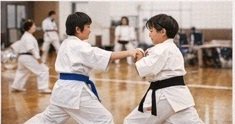

修義舘の指導風景
Director
修義舘が大切にしている考え方や、指導に込めている想いをご紹介します。

修義舘の指導風景
Master
礼儀を大切にしながら、一人ひとりの歩幅に合わせて稽古を続けられる道場づくりを目指しています。健康づくりから大会を目指す挑戦まで、それぞれの目標に寄り添う指導を大切にしています。
詳しい経歴や歩みは掲載準備中です。内容が整い次第、順次ご紹介いたします。
基本を大切に積み重ねること、仲間と切磋琢磨すること、そして長く続けられることを大切にしています。空手を通して心身を鍛え、日々の成長につながる場を育てています。
館長近影や詳しい所属団体一覧は、確認が取れ次第追加してまいります。
お問い合わせはこちら